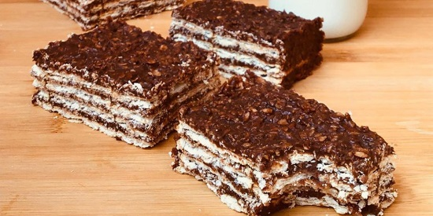

Turrón de avena y chocolate
Ingredientes
- 200g Avena
- 200g Manteca/Margarina
- 200g Chocolate
- 2 paquetes de Criollitas/Galletitas de agua
Preparación
- En un recipiente al fuego colocar la manteca y revolver hasta que esté líquida, agregar el chocolate, la avena y mezclar.
- En una fuente disponer una capa de galletitas y una de mezcla superponiendo hasta tener la cantidad de capas deseadas.
-(recomendado no mas de 3)
- Llevar al freezer y dejar que endurezca.
Enjoy :)